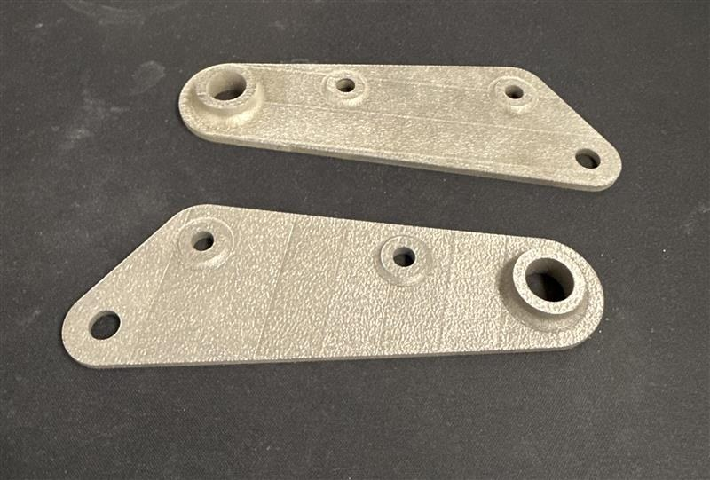
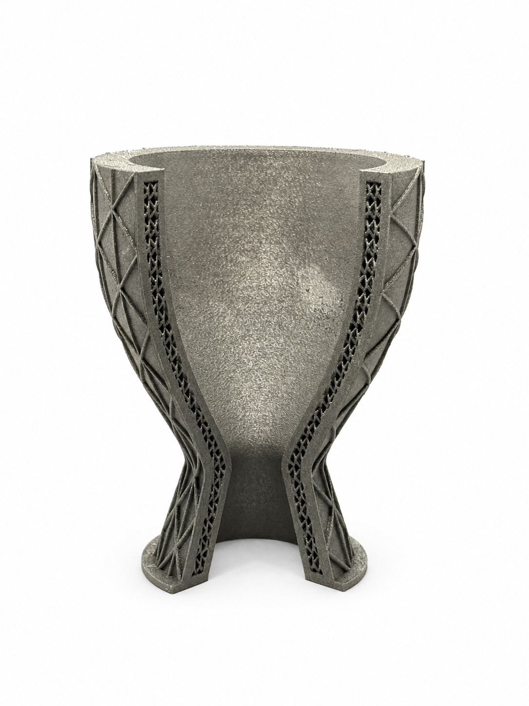
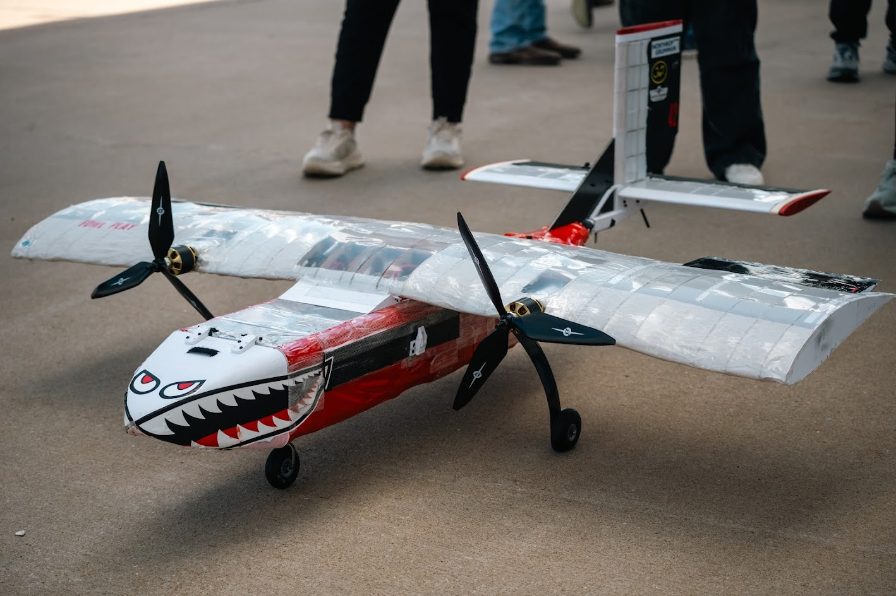
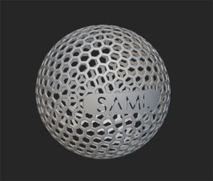
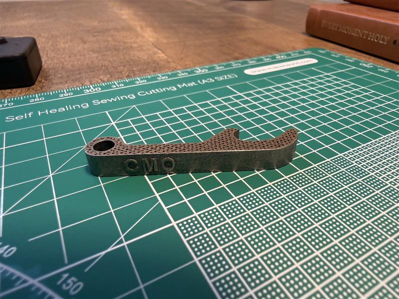
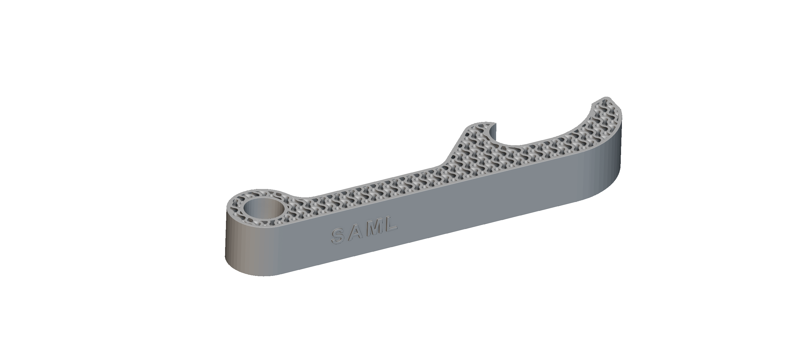

Bell Crank
Printed in Ti-64 for the University of Oklahoma Sooner Racing team (part designed by Sooner Racing). Future work: topology optimization.
Projects

Modeled in nTop / nTopology with internal BCC lattice cooling geometry and a variable isogrid reinforcement field, then printed in Ti-6Al-4V on a GE M2 Series metal 3D printer.

A dual-prop, high-wing RC aircraft built for the University of Oklahoma DBF team. I served as structures lead and helped drive the CAD modeling and fabrication.
Additional Design & Manufacturing Projects
A collection of additional projects I've designed, modeled, and manufactured using CAD software and additive manufacturing technologies.

Printed in Ti-64 for the University of Oklahoma Sooner Racing team (part designed by Sooner Racing). Future work: topology optimization.


Modeled in nTop (nTopology) and printed in Ti-6Al-4V as a small metal additive manufacturing demo part.


Modeled in nTop and printed in Ti-6Al-4V with gyroid infill. Has opened 100+ bottles without failure — a compact, durable metal demo.